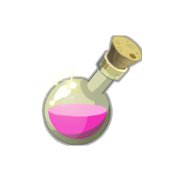
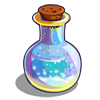
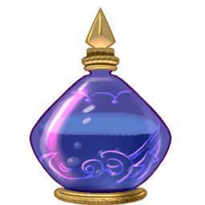
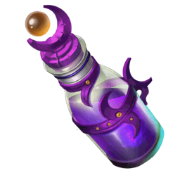
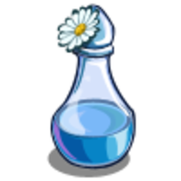

Potions For Sale!
|

$45.00 USD. Standard rejuvenation potion for sickness, exhaustion, etc. Tastes like bubblegum! |

$25.00 USD. A happiness potion for those particularly awful days! Tastes faintly like mint. |
|

$50.00 USD. A sleeping potion for you, your friends, your children, etc. It's harmless, but be careful! Sleeping for 24 hours straight has been reported. Please have food or candy on hand to counter low blood sugar upon awakening! Supposedly tastes like licorice. |

$5,000.00 USD. Darkness potion. Leave outside in a cauldron to evaporate into the clouds. The next time it rains, darkness will be cast around the global for 48 hours. DO NOT DRINK THIS POTION!!! |
|
$250.00 USD. A resurrection potion. There is no proof this will bring anyone back from the dead, especially not in the same capacity they died in! However, it works like a charm in bringing the unconscious (including comas!) back into consciousness. Tastes like rubber despite its nice, pastel color. |

$20.00 USD. Garden not working out so well? Use this! Guaranteed to make your garden flourish, just replace your normal watering routine with this potion instead! Mixing with water has been known to cause unpredictable results, so I advice against it. Can be bought in bulk for a deep discount! |